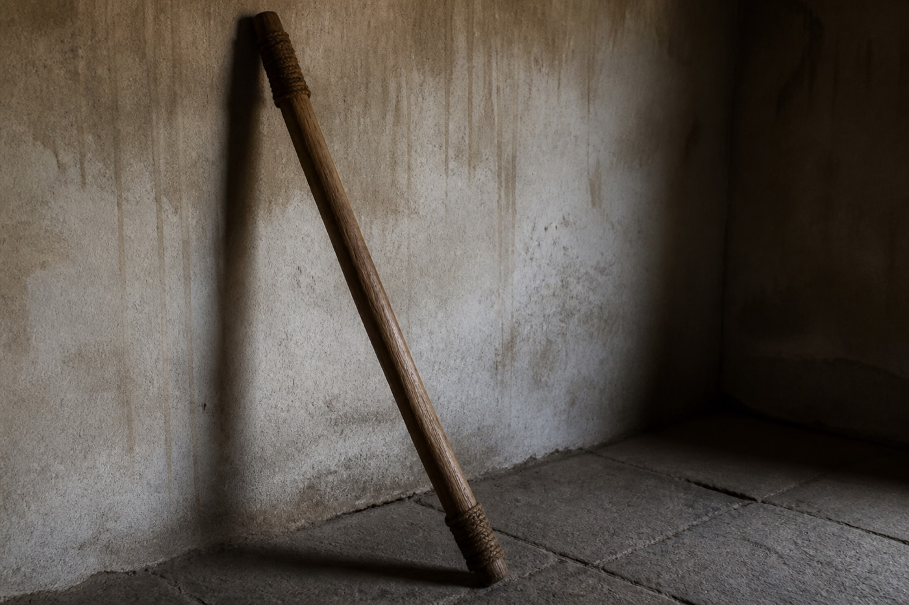

旧抄写：宾客不踏不坐。抬轿抬棺，杠要抬高，擦到坎，这一趟算脏。脏了要停，要另择，或至少不能再当干净的喜客放进堂。
「踩门槛招鬼」是骂人。本抄不把它写成真。夜岗板上忌踏忌坐，来自格子，不来自鬼。
坡道争议另页。把坡道写成得罪神明，是偏见，不是本抄结论。39/44

旧抄写：宾客不踏不坐。抬轿抬棺，杠要抬高，擦到坎，这一趟算脏。脏了要停，要另择，或至少不能再当干净的喜客放进堂。
「踩门槛招鬼」是骂人。本抄不把它写成真。夜岗板上忌踏忌坐，来自格子，不来自鬼。
坡道争议另页。把坡道写成得罪神明，是偏见，不是本抄结论。39/44

脏了要停，是旧抄的口气。今夜停不停，轮不到旧抄决定。夜岗只能建议不放行。不放行之后，人还在门口，棺还在等抬。等抬的事归家里，不归词条。
抬高两个字写起来轻。杠在肩上并不轻。穆三刀听见皮蹭木头，旧抄在这一句上用得着，用完仍要回到格子。